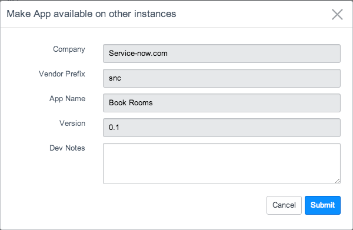
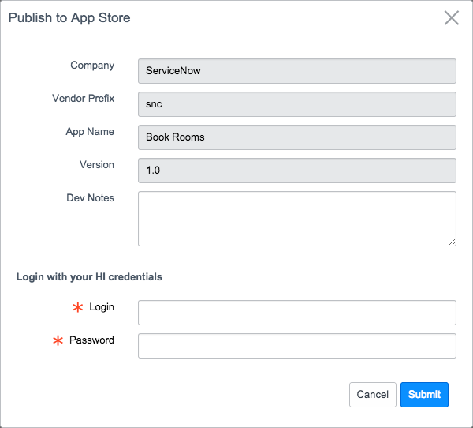
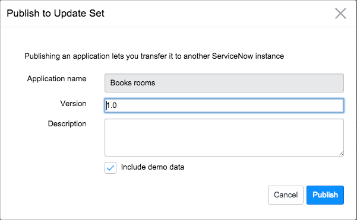

Sharing Applications
| |
Note: This article applies to Fuji and earlier releases. For more current information, see Application Sharing at http://docs.servicenow.com
The ServiceNow Wiki is no longer being updated. Visit http://docs.servicenow.com for the latest product documentation. |
Contents
1 Overview
Administrators can share applications that are complete and are ready for use on other instances. For example, you can share an application to deploy it on your production instance.
This feature has changed with the Fuji release. For information about earlier versions, see Publishing Applications - Versions Prior to Fuji.
2 Include Application Data
Application developers can choose to include any number of records from an application data table when sharing the application. The application data only includes the version of the records that existed when the records were created. The system does not update this snapshot of the application data when the records change. Application designers can include data on a table by table basis.
- Navigate to the list for an application data table.
- Filter the list to display the records you want to include.
- Right-click the list header, and select Create Application FIles.
- For Load When, select when the application record should include application data.
- New Install and Upgrades: includes application data whenever the application is installed or upgraded.
- New Install: includes application data only when the application is installed.
- New Install with Demo Data: includes application data only when the application is installed with demo data.
- Click OK.
- The system adds the records to the application files related list.
-
- Repeat steps 1 - 5 for each application data table you want include.
{kind=link}
3 Publish Applications to the ServiceNow Application Repository
Uploading an application to the application repository makes this version of the application available to all instances assigned to the same company. Installing an application from the application repository ensures that you always have the same application version on all instances, that the instance meets the application installation requirements, and allows you to install application updates.
- Navigate to System Applications > Applications.
- Click the Develop tab.
- Open the application record you want to upload to the application repository.
- Click the Make App available on other instances related link.
- [Optional] Define additional application information by completing the fields in the dialog box (see table).
- Make application available on other instances
- Click Submit.
- The system uploads the current version of the application to the application repository allowing other instances to download it.
{kind=link}
| Field | Description |
|---|---|
| Company | [Read only] The company associated with this instance. |
| Vendor Prefix | [Read only] The unique vendor prefix associated with your company. |
| App Name | [Read only] The application name as specified in the custom application record. |
| Version | The application version uploaded. |
| Dev Notes | [Optional] A description of the changes of contained in this release. |
4 Publish Applications to the ServiceNow Store
Publishing an application to the ServiceNow Store makes it available to everyone. To publish an application you must join the Technology Partner Program and have it certified.
| |
Note: You cannot publish global applications to the ServiceNow store. |
- Navigate to System Applications > Applications.
- Click the Develop tab.
- Open the application record you want to publish to the ServiceNow Store.
- Click the Publish to Store related link.
- [Optional] Define additional application information by completing the fields in the dialog box (see table above).
- Publish an application to the ServiceNow Store
- Enter your HI credentials.
- Click Submit.
- The system uploads the current version of the application to the ServiceNow Store allowing other users to download it.
{kind=link}
5 Publish Applications to an Update Set
Publishing an application creates an update set containing the current version of the application's configuration records. Administrators can use this update set as a backup file for auditing purposes or to transfer the application to another instance.
- Navigate to System Applications > Applications.
- Click the Develop tab.
- Open the application record you want to create an update set for.
- Click the Publish to Update Set related link.
- [Optional] Define additional application information by completing the fields in the dialog box (see table).
- Publish to update set
- Click Publish.
- A new update set is created and the latest update of each application file in the application is copied into it. The update set is marked as complete.
- Transfer the update set to another instance according to your test process. See Transferring Update Sets.
- Run any fix scripts that are included in the application.
{kind=link}
| Field | Description |
|---|---|
| Application name | [Read-only] Displays the name of the application that you are publishing. |
| Version | Enter version information to append to the update set name in dot-notation such as 1.2.3. The platform saves the information you enter here in the application Version field (starting with the Eureka release).
The update set has the name <Application name> - <Version>. If you leave this field blank, the initial update set has the name <Application name> and subsequent update sets have the name <Application name> - <Sequential number>. |
| Description | Enter a description for the update set. By default, this field contains the short description of the application. |
| Include data | Select the check box to include a limited number of data records from each table in the application. Use this feature to package sample data with your applications.
Warning: Using this feature to migrate large quantities of data records between instances can cause performance issues, as it is not intended for this purpose. To migrate data, use an instance-to-instance import. Administrators can adjust the maximum number of data records to include with an application. Note:
|
5.1 Limit Data Included
Administrators can limit the number of data records to include when publishing an application to an update set. This limit only applies to application data. An update set always contains all of the configuration records associated with the application at the time of its creation.
- Enter sys_properties.list in the navigation filter.
- Locate the com.snc.apps.publish.maxrows property.
- Set the Value field.
- To minimize performance impact, set this value to less than or equal to the default value of 1,000.
- Click Update.
6 Retrieve Applications from the Repository
The ServiceNow application repository contains the most recent version of applications that your company's application developers have made available to other instances. Administrators can use the application repository to install and update applications.
6.1 Install Applications
Administrators can install applications developed by their own company from the application repository.
- Log in to the instance on which you want to install the application.
- Navigate to System Applications > Applications.
- Click Downloads.
- Click the Install button for the application you want to install.
- If an application is not listed, contact your application developer to request they make the application available to other instances.
- The installation progress appears.
- You can only install one application at a time. The system disables the Install button for other applications during installation.
6.2 Install Updates
Administrators can install updates from the application repository to ensure they have the most recent application version.
- Log in to the instance on which you want to check for updates.
- Navigate to System Applications > Applications.
- Click Updates.
- Click the Update button for the applications you want to update.
- If an application is not listed, no updates are available for it.
6.3 Uninstall Applications
Administrators can uninstall applications they no longer need on an instance. Uninstalling an application removes all application files associated with the application. You have the option to remove application data as well.
- Log in to the instance on which you want to remove an application.
- Navigate to System Applications > Applications.
- Click on the name or icon of the installed application you want to uninstall.
- Click the Uninstall related link.
- The Uninstall confirmation window appears. You can review the tables and records associated with this application before uninstalling.
- [Optional] Clear the Retain tables and data check box to delete all data associated with this application, such as request records.
- Leave this check box selected to remove only application files such as field labels, dictionary entries, and ACLs.
- Click OK.
- In the confirmation prompt that appears, enter uninstalll, then click OK.
- After the application is uninstalled, click Done.